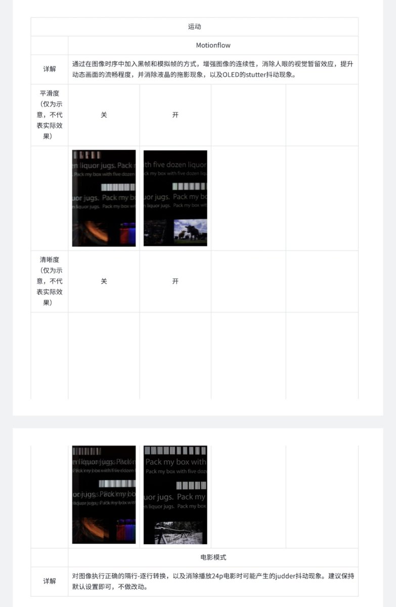
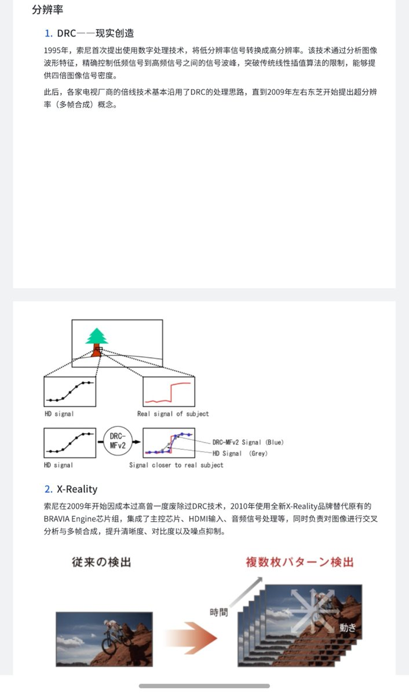
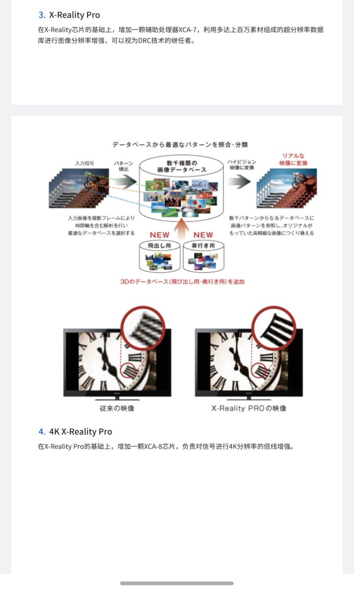

你索尼电视研究多少年的东西了，到头来被英伟达吹成了伟大发明，新节省算力技术。摘桃子这块，很多用显示器的似乎根本意识不到在世界的另一端有一群工程师几十年的技术积淀一步步探索分辨率的处理极限。早在1995年索尼就开创性的将drc功能作为了c端商用。反看英伟达此时呢？dlss5的画面处理本质也是电视的味精功能拉伸对比度和色彩深度强行营造一种画面真实的感觉,可现实呢？既不贴合素材，也没有人长久观看。只有部分人强行拉高所谓色彩觉得画面很真实截图。至于新出的凭空捏造细节，为什么以往电视都不处理这个。因为大家都遵守一个最基本细节，在保存创作者意图之上对画面进行处理来让观众的观看体验进行提升。dlss5完全凭空捏造细节根本就不遵守创作者，因此才从来没有人这么搞过。你黄狗呢，把以往显示技术多少人的努力吹成了自己的发明创造，现在没有卖点还要强行创造卖点打破大家一直遵守创作者这个最基本的画面处理原则


